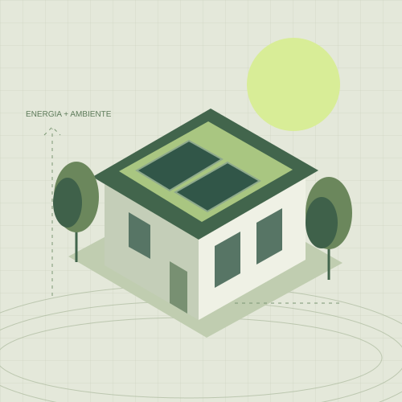

Un futuro migliore
inizia dagli spazi
che viviamo.
Energia, edifici e ambiente. Un approccio tecnico e concreto per dare valore al tuo immobile e alle tue scelte.
DANIELE D’ORAZIO · INGEGNERE AMBIENTALE

Competenze tecniche.
Soluzioni comprensibili.
Dall’analisi iniziale alla documentazione: percorsi pensati per privati, proprietari e realtà del territorio. Servizi illustrativi da confermare.
Prima capire.
Poi trovare
la strada giusta.
Mi chiamo Daniele D’Orazio, sono un ingegnere ambientale a Isola del Liri. Questo sito di prova presenta un possibile modo di raccontare la mia attività.
L’idea alla base: rendere accessibili gli aspetti tecnici e accompagnare ogni scelta con informazioni chiare.
PRESENTAZIONE DIMOSTRATIVA DA PERSONALIZZAREAscolto e inquadramento
Si parte dall’immobile, dal progetto e dalle tue esigenze, per definire cosa serve davvero.
Analisi e sopralluogo
Documenti, rilievi e verifiche per costruire un quadro tecnico del caso.
Un risultato chiaro
Documentazione e indicazioni spiegate con un linguaggio comprensibile.
Da Isola del Liri,
uno sguardo al futuro.
Isola del Liri · Provincia di Frosinone
Il territorio è il punto di partenza. L’area di disponibilità per incarichi e sopralluoghi sarà definita direttamente con il professionista.
Facciamo chiarezza.
Di cosa si occupa la certificazione energetica?
Descrive le prestazioni energetiche di un edificio. La pagina dedicata presenta un esempio del servizio; modalità e documenti necessari vanno verificati sul caso specifico.
Come si prepara un primo confronto?
Puoi raccogliere le informazioni di base sull’immobile, la sua posizione e l’obiettivo della richiesta. Il professionista indicherà quali documenti approfondire.
Si può valutare come migliorare un edificio?
Una valutazione tecnica può aiutare a confrontare possibili interventi sull’edificio e sugli impianti. Le soluzioni dipendono dalle caratteristiche del singolo immobile.
Come posso contattare Daniele?
Questa è una versione dimostrativa. I recapiti reali saranno inseriti dopo la verifica con Daniele; al momento il sito non raccoglie richieste.
Diamo forma
alla tua idea.
Una certificazione, un immobile da migliorare o un progetto da approfondire: tutto parte da un primo confronto.
Ingegnere ambientale
Isola del Liri (FR)
Recapiti in fase di inserimento
Questa demo non invia messaggi e non raccoglie dati personali. Contatti, iscrizione all’albo e dati fiscali saranno completati prima del lancio definitivo.